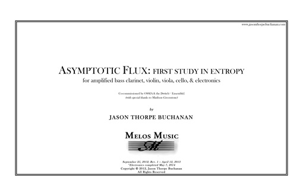

VIEW SCORE:
ABOUT THE WORK:
-
Year Composed:
2012 -
Instrumentation:
bass clarinet, violin, viola, cello, and electronics -
Share:
PROGRAM NOTES:
Asymptotic Flux: First Study in Entropy was written over a three month period while traveling and hitchhiking throughout Europe, surrounding time spent attending at the IRCAM and Darmstadt. […] In addition to sonorities that are worked out through sampling and spectral analysis of multiphonics, additional pitch content is generated through an acoustic analogue to a process known in electronic music as “single-sideband modulation”, resulting in a series of combination tones made by adding two frequencies to one another. […] The title comes from an arguably conceptual device: the low E-flat that simultaneously pervades the work and is non-existent. I imagine the ensemble is always reaching towards this E-flat as a point of centricity, but never quite arrive; analogous to an asymptote, as it approaches infinity. Entropy can be described as the “measure of the disorder or randomness in a closed system,” or the tendency for all matter and energy in the universe to evolve toward a state of inert uniformity.”…
Performances of Asymptotic Flux: First Study in Entropy

NEON Music Festival
University of Nevada, Las VegassLas Vegas, NV

Gaudeamus Muziekweek
Utrecht,

VIPA Festival
Valencia,

New York City Electroacoustic Music Festival
NYC, NY 10002
Eastman Computer Music Center Concert
Eastman School of Music, Eastman East Wing
Hatch Recital Hall
433 East Main St
Rochester, NY 14604
Ossia New Music Concert
Eastman School of Music, Eastman East Wing
East Wing 415
433 East Main St
Rochester, NY 14604